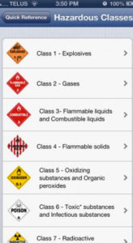

8.5 Computação


8.5.1 Uma mídia volátil e abrangente
É questionável se a computação deve ser considerada uma mídia, mas estou a utilizar o termo num sentido amplo, e não no sentido técnico de escrever código de programação. Prefiro o termo "computação" a "TICs" (tecnologias de informação e comunicação). A computação constitui uma mídia, ao passo que as TICs se referem mais às tecnologias utilizadas. A internet, em particular, é uma mídia abrangente que acolhe texto, áudio, vídeo e computação, além de proporcionar outros elementos, tais como a comunicação distribuída e o acesso a oportunidades educativas. A computação continua a ser uma área em rápido desenvolvimento, com novos produtos e serviços surgindo constantemente. Com efeito, abordarei os desenvolvimentos recentes das mídias sociais e de algumas tecnologias emergentes separadamente da computação, embora tecnicamente constituam subcategorias desta. Mais uma vez, contudo, as mídias sociais e algumas tecnologias emergentes encerram affordances que não são tão prevalentes nos ambientes tradicionais de aprendizagem baseados na computação.
Numa mídia tão volátil, seria imprudente ser dogmático sobre as características únicas do meio, mas, mais uma vez, o objetivo deste capítulo não consiste em apresentar uma análise definitiva, mas sim uma forma de pensar sobre a tecnologia que facilite a escolha e a utilização desta por parte do professor. O foco orientador reside em: quais as affordances pedagógicas da computação que diferem das de outras mídias (além do fato relevante de conseguir abranger todas as restantes características das mídias)?
Embora se tenha verificado uma vasta pesquisa sobre computadores na educação, tem existido menor enfoque nas especificidades das suas características pedagógicas como mídia, apesar de se ter realizado e continuar a desenvolver investigação e desenvolvimento muito interessantes na interação homem-máquina e, em menor escala, na inteligência artificial. Assim, nesta seção, baseio-me mais na análise e na experiência do que na investigação científica sobre as affordances ou características únicas da computação como mídia educativa.
8.5.2 Características de apresentação



A apresentação não constitui propriamente o ponto forte da computação sob a perspectiva pedagógica. Esta consegue representar texto e áudio razoavelmente bem, e vídeo de forma menos satisfatória, devido ao tamanho limitado da tela (e o vídeo tem frequentemente de partilhar o espaço da tela com o texto) e à largura de banda/pixels/tempo de descarregamento exigidos. O tamanho da tela pode constituir uma limitação real de apresentação com dispositivos móveis mais pequenos, embora os tablets como o iPad representem um avanço importante na qualidade da tela.
No entanto, ao contrário de outras mídias, a computação permite ao usuário final interagir diretamente com o meio, na medida em que este (na educação, o estudante) pode adicionar, alterar ou interagir com o conteúdo, pelo menos até certo ponto. Além disso, de forma mais controversa, a computação consegue recolher automaticamente as respostas do usuário final para fins de análise de dados (analytics). Neste sentido, a computação aproxima-se de um ambiente de aprendizagem completo, embora virtual.
Assim, em termos de apresentação, a computação pode ser utilizada para:
- criar e apresentar conteúdos originais de ensino de forma rica e variada (recorrendo a uma combinação de texto, áudio, vídeo e webinários);
- permitir o acesso a outras fontes de conteúdos secundários "ricos" através da internet;
- permitir aos estudantes comunicar síncrona e assincronamente com o professor e com outros alunos;
- estruturar e gerir conteúdos através da utilização de sites, sistemas de gestão de aprendizagem, servidores de vídeo e outras tecnologias semelhantes;
- criar mundos virtuais ou ambientes/contextos virtuais através de tecnologias como animações, simulações, realidade aumentada ou virtual e jogos sérios;
- definir testes de escolha múltipla, corrigir automaticamente esses testes e fornecer feedback imediato aos aprendizes;
- permitir aos aprendizes submeter digitalmente trabalhos escritos (do tipo ensaio) ou multimídia (baseados em projetos) através da utilização de e-portfólios.
8.5.3 Desenvolvimento de competências
O desenvolvimento de competências num ambiente de computação dependerá, mais uma vez, em grande parte da abordagem epistemológica do ensino. A computação pode ser utilizada para focar na compreensão e no entendimento, através de uma abordagem behaviorista da aprendizagem baseada no computador (apresentação/teste/feedback). No entanto, a componente de comunicação da computação permite também abordagens mais construtivistas, através de debates on-line entre estudantes e de trabalhos multimídia criados pelos próprios alunos.
Assim, a computação pode ser utilizada (de forma única) para:
- desenvolver e testar a compreensão dos conteúdos por parte dos estudantes através de aprendizagem/testes baseados no computador;
- desenvolver a programação informática e outras competências baseadas na computação;
- desenvolver competências de tomada de decisão através da utilização de simulações e/ou mundos virtuais de base digital;
- desenvolver competências de raciocínio, argumentação baseada em evidências e colaboração através de fóruns de discussão on-line moderados pelo professor;
- permitir aos estudantes criarem as suas próprias produções/trabalhos multimídia on-line através da utilização de e-portfólios, melhorando assim as suas competências de comunicação digital e avaliando melhor o que aprenderam;
- desenvolver competências de desenho experimental através da utilização de simulações, equipamentos de laboratório virtuais e laboratórios remotos;
- desenvolver competências de gestão do conhecimento e de resolução de problemas, solicitando aos estudantes que pesquisem, analisem, avaliem e apliquem a problemáticas do mundo real conteúdos acessados através da internet;
- desenvolver competências linguísticas orais e escritas, tanto através da apresentação da língua como da comunicação com outros estudantes e/ou falantes nativos da língua via internet;
- recolher dados sobre as interações dos usuários finais/estudantes com computadores e equipamentos associados, tais como celulares e tablets, para:
- análise de aprendizagem (learning analytics), que pode ser utilizada para identificar fragilidades no planejamento do ensino, o sucesso e insucesso dos estudantes face aos resultados de aprendizagem (incluindo o desenvolvimento de competências), bem como identificar alunos em risco de insucesso;
- aprendizagem adaptativa, oferecendo aos aprendizes rotas alternativas através dos materiais de estudo, proporcionando um elemento de personalização;
- avaliação (incluindo a monitorização);
- feedback automatizado ou humano.
Estas affordances complementam as potencialidades que outras mídias conseguem apoiar no âmbito de um ambiente de computação mais amplo.
8.5.4 Pontos fortes e limitações da computação como mídia de ensino
Muitos professores evitam a utilização da computação por receio de que esta os possa substituir, ou por considerarem que conduz a uma abordagem muito mecânica do ensino e da aprendizagem. Esta percepção é alimentada por cientistas da computação, políticos e líderes industriais mal informados que argumentam que os computadores conseguem substituir ou reduzir a necessidade de seres humanos no ensino. Ambas as perspectivas revelam incompreensão sobre a sofisticação e complexidade do ensino e da aprendizagem, bem como sobre a flexibilidade e vantagens que a computação pode trazer ao ensino.
Apresentam-se, assim, algumas das vantagens da computação como mídia de ensino:
- constitui uma mídia de ensino muito poderosa em termos das suas características pedagógicas únicas, na medida em que consegue combinar as características pedagógicas do texto, do áudio, do vídeo e da computação de forma integrada;
- as suas características pedagógicas únicas revelam-se úteis para ensinar muitas das competências de que os aprendizes necessitam na era digital;
- a computação consegue conferir aos aprendizes maior autonomia e capacidade de escolha no acesso e criação do seu próprio estudo e contextos de aprendizagem;
- a computação permite aos aprendizes interagir diretamente com os materiais de estudo e receber feedback imediato, aumentando assim, quando bem delineada, a rapidez e a profundidade da sua aprendizagem;
- a computação permite a qualquer pessoa com acesso à internet e a um dispositivo informático estudar ou aprender em qualquer momento ou local;
- a computação permite uma comunicação regular e frequente entre estudantes, professores e colegas;
- apresenta flexibilidade suficiente para ser utilizada no apoio a uma vasta gama de filosofias e abordagens de ensino;
- consegue apoiar em algumas das tarefas mais repetitivas de avaliação e acompanhamento do desempenho dos estudantes, libertando o professor para se focar nas formas mais complexas de avaliação e de interação com os alunos.
Por outro lado, as limitações da computação são:
- muitos professores não dispõem de formação ou consciência sobre os pontos fortes e as limitações da computação como mídia de ensino;
- a computação é frequentemente vendida de forma exagerada como a salvação para a educação; trata-se de uma mídia de ensino poderosa, mas necessita de ser gerida e controlada pelos educadores;
- a interface de utilizador tradicional da computação, como menus suspensos, navegação na tela por cursor, controle tátil e um sistema de arquivo ou armazenamento de base algorítmica, embora muito funcional, não se revela intuitiva e pode apresentar-se bastante restritiva sob o ponto de vista pedagógico. O reconhecimento de voz e as interfaces de pesquisa como a Siri e a Alexa representam um avanço e detêm potencial para a educação, mas atualmente ainda não são utilizadas de forma generalizada como ferramentas educacionais (pelo menos por parte dos professores);
- verifica-se uma tendência de engenheiros e cientistas da computação para adotarem abordagens behavioristas na utilização da computação na educação, o que não só afasta professores e aprendizes de orientação construtivista, mas também subestima ou subutiliza o verdadeiro poder da computação para o ensino e a aprendizagem;
- apesar do poder da computação como mídia de ensino, existem muitos aspectos do ensino e da aprendizagem que exigem a interação direta entre estudante e professor — e entre estudantes —, inclusive ou sobretudo num ambiente totalmente on-line (ver o Capítulo 4, Seção 4). A importância do contato presencial, humano para humano, revela-se provavelmente maior quanto mais jovem ou menos maduro for o aprendiz, mas continuarão a existir muitos contextos de aprendizagem em que o contato presencial é necessário ou altamente desejável, mesmo para aprendizes mais velhos ou maduros (isto é discutido mais detalhadamente no Capítulo 10, Seção 4). A importância da interação presencial frequente entre professor e estudante é também provavelmente menor do que muitos professores consideram, mas maior do que muitos defensores da aprendizagem por computador compreendem. Não se trata de uma escolha de exclusão (isto ou aquilo), mas sim de encontrar o equilíbrio adequado no contexto certo;
- a computação necessita dos contributos e da gestão de professores e educadores, e em certa medida dos aprendizes, para determinar as condições sob as quais esta melhor funciona como mídia de ensino; e os professores necessitam de estar no controle das decisões sobre quando e como utilizar a computação para o ensino e a aprendizagem;
- para utilizar bem a computação, os professores necessitam de trabalhar em estreita colaboração com outros especialistas, tais como designers instrucionais e cientistas da computação.
A questão em torno do valor da computação como mídia para o ensino reside menos no seu valor pedagógico e mais na questão do controle. Dada a complexidade do ensino e da aprendizagem, é essencial que a utilização da computação para estes fins seja controlada e gerida por educadores. Desde que os professores detenham o controle e disponham dos conhecimentos e da formação necessários sobre as vantagens e limitações pedagógicas da computação, esta constitui uma mídia indispensável para o ensino na era digital.
8.5.5 Avaliação
Verifica-se uma tendência para focar a avaliação na computação em perguntas de escolha múltipla e respostas "corretas". Embora esta forma de avaliação apresente o seu valor na verificação da compreensão e para testar uma gama limitada de procedimentos mecânicos, a computação apoia também uma gama mais vasta de técnicas de avaliação, desde blogs e wikis criados pelos aprendizes até e-portfólios. Estas formas mais flexíveis de avaliação baseada na computação encontram-se mais alinhadas com a medição dos conhecimentos e competências de que muitos aprendizes necessitarão na era digital.
Atividade 8.5 Identificando as características pedagógicas únicas da computação
- Escolha uma das disciplinas que ministra. Quais os aspectos essenciais de apresentação da computação que poderiam assumir relevância para esta disciplina?
- Analise as competências listadas na Seção 1.2 deste livro. Quais destas competências seriam mais bem desenvolvidas através da utilização da computação em vez de outras mídias? Como faria isso recorrendo a um ensino baseado na computação?
- Em que condições seria mais adequado, em qualquer uma das suas disciplinas, avaliar os estudantes solicitando-lhes que criassem os seus próprios portfólios de projetos multimídia, em vez de recorrer a um exame escrito? Que condições de avaliação seriam necessárias para garantir a autenticidade do trabalho de um estudante? Esta forma de avaliação representaria trabalho adicional para você?
- Quais são os principais obstáculos à utilização mais frequente da computação no seu ensino? Filosóficos? Práticos? Falta de formação ou de confiança na utilização da tecnologia? Ou falta de apoio institucional? O que poderia ser feito para eliminar alguns desses obstáculos?
Para feedback sobre algumas destas questões, clique no podcast abaixo:
Um elemento de áudio foi excluído desta versão do texto. Você pode ouvi-lo on-line aqui: https://pressbooks.bccampus.ca/teachinginadigitalagev2/?p=210